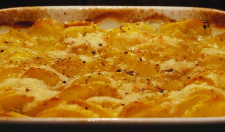

| Zutaten für 1 Person: | |
| 200 g | Kartoffeln |
| Zwiebel | |
| Gewürz | |
| Butter | |
| 10 g | Reibkäse |
| 1 dl | Bouillon |
Ofen vorheizen.
Eine flache Gratinform mit wenig Butter ausstreichen
Zwiebel hacken und am Boden verteilen.
Kartoffeln schälen und in 2 mm dicke Scheiben schneiden.
Kartoffelscheiben dachziegelartig hineinschichten.
Das Ganze halbhoch mit Bouillon begiessen und im vorgeheizten Ofen während etwa 40 Minuten zugedeckt weich dünsten.
Mit dem Reibkäse und wenig Butterflocken bestreuen. Kurz überbacken, bis die Kartoffelscheiben Farbe annehmen.
Keine Ahnung
Ganz OK für einen nicht Rahm-basierten Kartoffelgratin. Kommt nicht an meinen Lieblingsgratin ran. Schmeckt dennoch fein. RE, 21.10.2004
@LINKBACK_TAG@ @WAKELOCK@